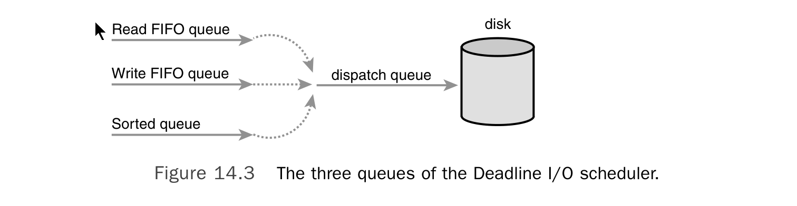
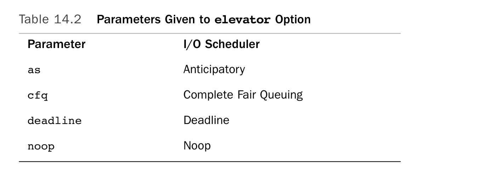
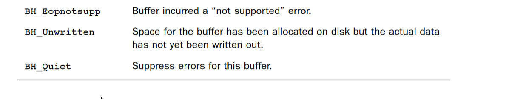
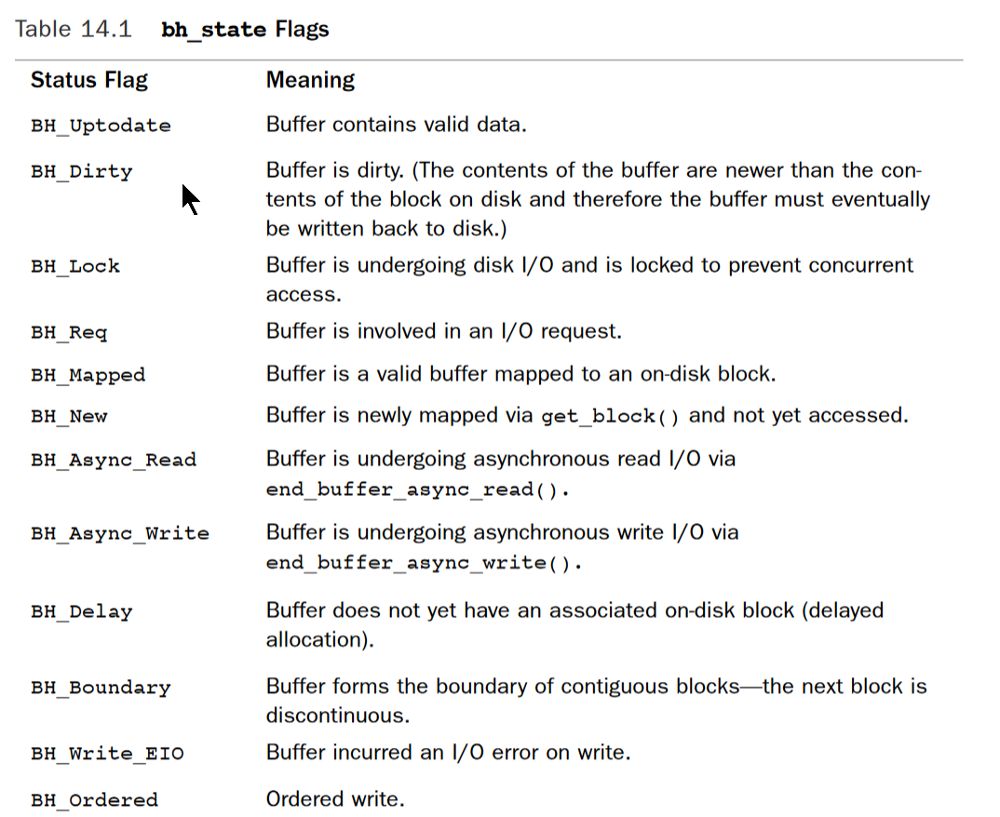

Block Device
块设备是随机访问的设备，数据传输以块为单位。比如 硬盘，软盘，闪存，光盘等 与块设备相应的是字节设备，char devices, 访问的是数据流，比如是键盘，鼠标，打印机。 块设备与字节设备最大的区别，一个是随机访问，一个是顺序访问。块设备访问的管理比字节设备更麻烦。对于字节设备而言，每次访问的位置都是相同的，current position.而块设备的访问因为是随机的，需要向前或者向后访问到任意位置。这种访问方式给块设备i/o提供了优化空间。同时，相比字节设备，块设备的i/o效率更为影响系统性能。
对于块设备而言，最小的可寻址单元是扇区（sector）。一个扇区大小是2的次方，通常是512byte.
文件系统可运行在不同的物理块设备上，因此文件系统有自己的可寻址单元，块（block）。块通常是扇区的整数倍。通常的块大小有512byte, 1k，4k等。 块大小也不能大于page size. 文件系统层的block对应磁盘上连续的sectors.
文件系统访问块设备，都是以block为基本单位。
Block I/O 优化
操作系统需要对块设备的I/O做优化，因为块设备是随机访问的设备，尤其对于机械硬盘而言，磁头的移动最费时，通常是很多毫秒的时间。如果没有优化，每次上层一有I/O请求就让磁盘驱动去处理这个I/O请求，下个I/O请求又要跳转到别的地址，浪费大量时间seeking上,系统的I/O throughput很低。
内核中用于I/O优化的叫做I/O scheduler. I/O scheduler的主要设计思想就是通过对I/O请求的mergeing 和sorting,减少I/O seeking 的时间。
The Linus Elevator
这是最早的I/O scheduler。 内核中有用于cache I/O请求的队列。队列中是待处理的I/O,每当有新的I/O请求被issue后， If the new request is adjacent to an existing request, it's merged with existing request.如果无法merge，则根据这个I/O请求的位置，将其插入队列中相应的位置。 如果队列中有I/O请求已经pending很久了，则不执行插入步骤，而仅仅时将其加入到队列尾。 This prevents many requests to nearby on-disk locations from indefinitely starving requests to other locations on the disk.
The Linus elevator is implemented in block/elevator.c.
The Deadline I/O Scheduler
I/O请求分为读写操作。通常，用户程序对读操作和写操作delay的容忍程度不同。 Write operations can usually be committed to disk whenever the kernel gets around to them, entirely asynchronous with respect to the submitting application. However, when an application submits a read request, the application blocks until the request is fulfilled. That is, read requests occur synchronously with respect to the submitting application. Consequently, read latency is more important to the performance of the system than write latency.
而且，一个应用程序issue的读操作通常互相依赖，是有序的。For example, consider the reading of a large number of files. Each read occurs in small buffered chunks.The application does not start reading the next chunk (or the next file, for that matter) until the previous chunk is read from disk and returned to the application. 而且，不管是读操作，还是写操作，相关的metadata都需要先被读取出来。比如 inode. Reading these blocks off the disk further serializes I/O.
Consequently, if each read request is individually starved, the total delay to such applications compounds and can grow enormous.
综上，读操作的同步性，有序性使得读操作对I/O latency 更为敏感，应该先于写操作被service。
Deadline I/O scheduler 给每个I/O请求一个expiration time，读操作默认是500毫秒，写操作默认是5秒。 Deadline I/O scheduler 同The Linus Elevator一样，维持一个排序的I/O请求队列，It calls this queue the sorted queue.When a new request is submitted to the sorted queue,the Deadline I/O scheduler performs merging and insertion like the Linus Elevator. 除此之外，Deadline I/O scheduler 还分别维持了读请求队列和写请求队列，这两个队列不是有序的，而且先进先出的。每个I/O请求除了要加入到sorted queue中，还要分别加入到读队列或写队列中。
Under normal operation, the Deadline I/O scheduler pulls requests from the head of the sorted queue into the dispatch queue.The dispatch queue is then fed to the disk drive.This results in minimal seeks.
If the request at the head of either the write FIFO queue or the read FIFO queue expires , the Deadline I/O scheduler then begins servicing requests from the FIFO queue. In this manner, the Deadline I/O scheduler attempts to ensure that no request is outstanding longer than its expiration time. See Figure 14.3.

Because read requests are given a substantially smaller expiration value than write requests, the Deadline I/O scheduler works to ensure that write requests do not starve read requests.This preference toward read requests provides minimized read latency.The Deadline I/O scheduler lives in block/deadline-iosched.c.
The Anticipatory I/O Scheduler
Although the Deadline I/O scheduler does a great job minimizing read latency, it does so at the expense of global throughput. Consider a system undergoing heavy write activity. Every time a read request is submitted, the I/O scheduler quickly rushes to handle the read request.This results in the disk seeking over to where the read is, performing the read operation, and then seeking back to continue the ongoing write operation. The preference toward read requests is a good thing, but the resulting pair of seeks is detrimental to global disk throughput.
The Anticipatory I/O scheduler 在Deadline I/O Scheduler之上加一个优化， attempts to minimize the seek storm that accompanies read requests issued during other disk I/O activity.When a read request is issued, it is handled as usual, within its usual expiration period.After the request is submitted, however, the Anticipatory I/O scheduler does not immediately seek back and return to handling other requests. Instead, it does absolutely nothing for a few milliseconds. (The actual value is configurable; by default it is six milliseconds.) In those few milliseconds, there is a good chance that the application will submit another read request.Any read requests issued to an adjacent area of the disk are immediately handled.After the waiting period elapses, the Anticipatory I/O scheduler seeks back to where it left off and continues handling the previous requests.相比seeking 时间，这多等待的几毫秒是很值得的。
The Anticipatory I/O scheduler lives in the file block/as-iosched.c in the kernel source tree.
The Complete Fair Queuing I/O Scheduler
The CFQ I/O scheduler assigns incoming I/O requests to specific queues based on the process originating the I/O request. For example, I/O requests from process foo go in foo’s queues, and I/O requests from process bar go in bar’s queue.Within each queue, requests are coalesced with adjacent requests and insertion sorted.The queues are thus kept sorted sectorwise, as with the other I/O scheduler’s queues.
The CFQ I/O scheduler then services the queues round robin, plucking a configurable number of requests (by default, four) from each queue before continuing on to the next.This provides fairness at a per-process level, assuring that each process receives a fair slice of the disk’s bandwidth. The intended workload is multimedia, in which such a fair algorithm can guarantee that, for example, an audio player can always refill its audio buffers from disk in time. In practice, however, the CFQ I/O scheduler performs well in many scenarios.
The Complete Fair Queuing I/O scheduler lives in block/cfq-iosched.c. It is now the default I/O scheduler in Linux.
The Noop I/O Scheduler
这个scheduler只会将相邻的I/O操作合并，仅此而已，没有其他的优化，连排序都没有。 The Noop I/O Scheduler truly is a noop, merely maintaining the request queue in near-FIFO order, from which the block device driver can pluck requests. The Noop I/O scheduler’s lack of hard work is with reason. It is intended for block devices that are truly random-access, such as flash memory cards. If a block device has little or no overhead associated with “seeking,” then there is no need for insertion sorting of incoming requests, and the Noop I/O scheduler is the ideal candidate.
The Noop I/O scheduler lives in block/noop-iosched.c. It is intended only for random-access devices.
内核默认使用的是The Complete Fair Queuing I/O Scheduler，This can be overridden via the boot-time option elevator=foo on the kernel command line, where foo is a valid and enabled I/O Scheduler. See Table 14.2.

Block I/O related data structures
bio structure
struct bio 描述一次block i/o操作,一次block i/o操作会涉及到多个block,
所有的block用bi_io_vec数组表示，每个元素类型为struct bio_vec,表示这个block和内存page之间的关系
struct bio 这个结构体表示一次正在进行中的block i/o,bi_idx表示进行到哪部分了。
struct bio {
sector_t bi_sector; /* associated sector on disk */
struct bio *bi_next; /* list of requests */
struct block_device *bi_bdev; /* associated block device */
unsigned long bi_flags; /* status and command flags */
unsigned long bi_rw; /* read or write? */
unsigned short bi_vcnt; /* number of bio_vecs off */
unsigned short bi_idx; /* current index in bi_io_vec */
unsigned short bi_phys_segments; /* number of segments */
unsigned int bi_size; /* I/O count */
unsigned int bi_seg_front_size; /* size of first segment */
unsigned int bi_seg_back_size; /* size of last segment */
unsigned int bi_max_vecs; /* maximum bio_vecs possible */
unsigned int bi_comp_cpu; /* completion CPU */
atomic_t bi_cnt; /* usage counter */
struct bio_vec *bi_io_vec; /* bio_vec list */
bio_end_io_t *bi_end_io; /* I/O completion method */
void *bi_private; /* owner-private method */
bio_destructor_t *bi_destructor; /* destructor method */
struct bio_vec bi_inline_vecs[0]; /* inline bio vectors */
};
struct bio_vec {
struct page *bv_page;
unsigned int bv_len;
unsigned int bv_offset;
};
struct bio, bio_vec 和page的关系如下

一次block i/o操作涉及的磁盘block通常都是尽可能的排好序的，甚至可能是连续的，这是block i/o优化后的结果。 而文件在磁盘上的分布不是在连续的block上的，因此，一次block i/o操作，通常涉及到不同page的不同部分。block i/o优化
之前说过，文件数据在磁盘上通常是分散存储的，分散在不连续的块上。
而寻道是磁盘访问最耗时的操作，因此不能根据i/o请求到达的顺序来做i/o访问，linux使用电梯算法对请求队列中的i/o请求做重排，合并，减少i/o时间。
block i/o优化的核心就是mergeing and sorting. 目的就是为了减少寻道时间。 具体略
在上一章中，我们说到，文件的内容在内存中的cache为page cache.也就是file i/o操作使用的是page cache.
而如果直接是block i/o操作，比如读取磁盘上的inode数据，或者直接调用读取磁盘块的系统调用，这时候使用的cache就是buffer cache.
Each buffer is associated with exactly one block.The buffer serves as the object that represents a disk block in memory. Recall that a block is composed of one or more sectors but is no more than a page in size.Therefore, a single page can hold one or more blocks in memory.
The buffer_head structure holds all the information that the kernel needs to manipulate buffers and is defined in
struct buffer_head {
unsigned long b_state; /* buffer state flags */
struct buffer_head *b_this_page; /* list of page’s buffers */
struct page *b_page; /* associated page */
sector_t b_blocknr; /* starting block number */
size_t b_size; /* size of mapping */
char *b_data; /* pointer to data within the page */
struct block_device *b_bdev; /* associated block device */
bh_end_io_t *b_end_io; /* I/O completion */
void *b_private; /* reserved for b_end_io */
struct list_head b_assoc_buffers; /* associated mappings */
struct address_space *b_assoc_map; /* associated address space */
atomic_t b_count; /* use count */
};
b_state field specifies the state of this particular buffer

The b_count field is the buffer’s usage count.
The physical block on disk to which a given buffer corresponds is the b_blocknr-th logical block on the block device described by b_bdev.
The physical page in memory to which a given buffer corresponds is the page pointed to by b_page. More specifically, b_datais a pointer directly to the block (that exists somewhere in b_page), which is b_size bytes in length.Therefore, the block is located in memory starting at address b_data and ending at address b_data + b_size.
The purpose of a buffer head is to describe this mapping between the on-disk block and the physical in-memory buffer (which is a sequence of bytes on a specific page).